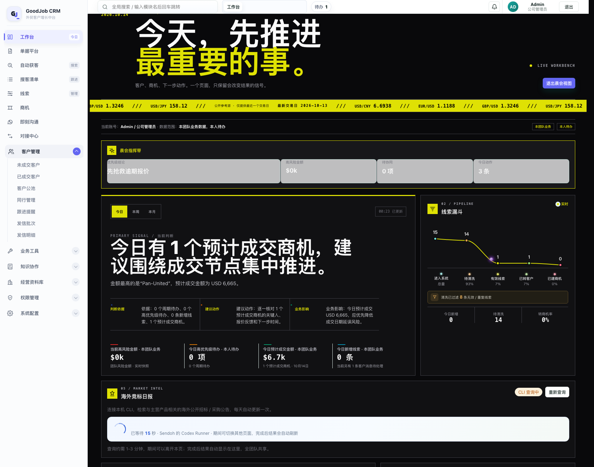
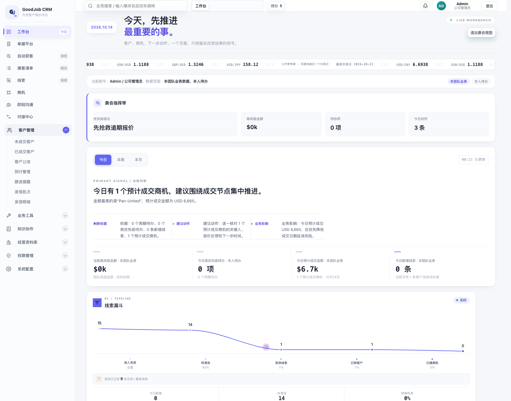
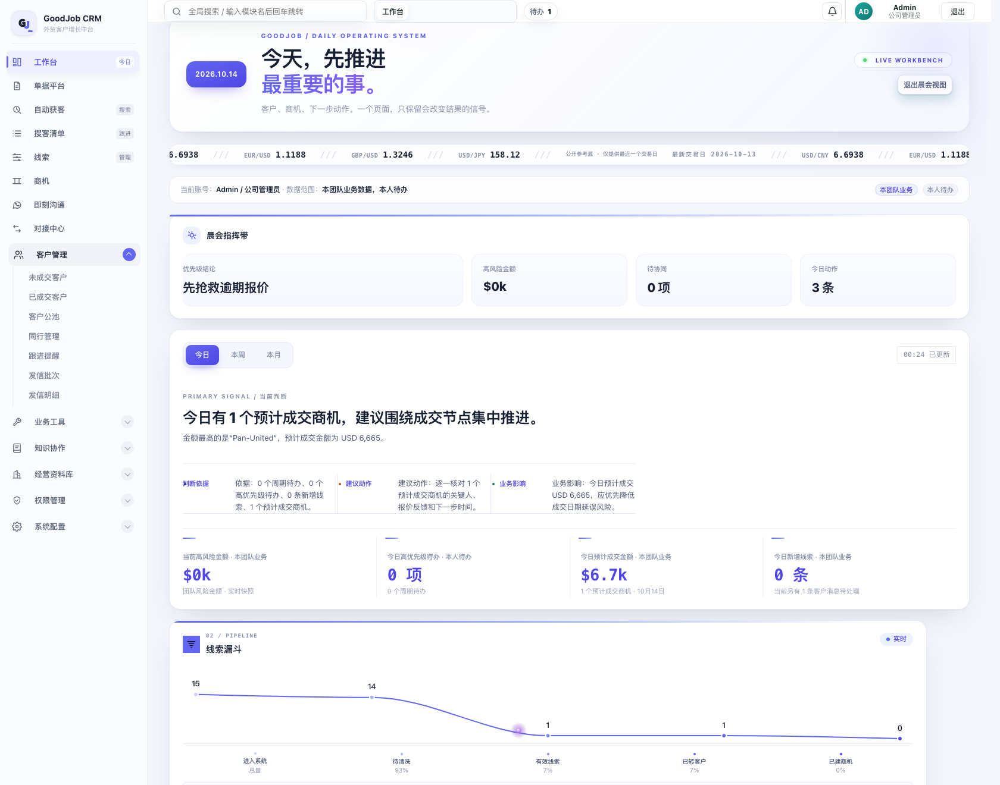
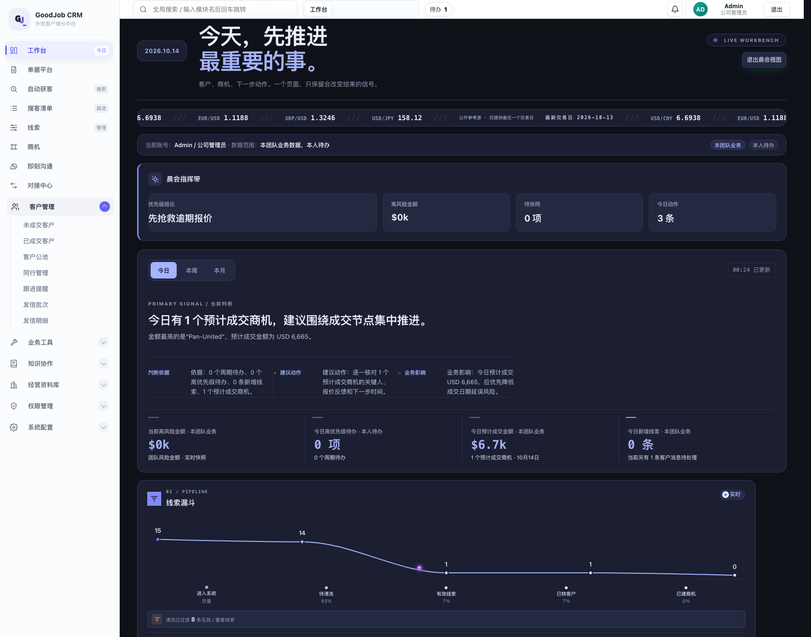
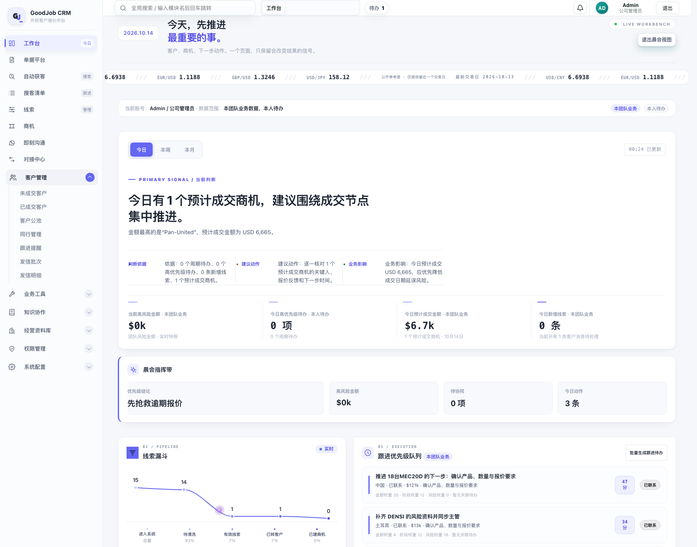

GOODJOB / WORKBENCH REDESIGN
现状：晨白主题（浅色侧栏 + 靛蓝）下，工作台仍是近黑底 + 荧光黄的「Kinetic 驾驶舱」，
一整块深色砸在浅色界面里，所以看着不搭。
下面四套都基于真实页面渲染（真实数据、真实侧栏、真实字体），只是工作台区域换了设计语言。
点标签切换对比，点图可看全屏细节。
#dfe104），
所以以前不管把主题切成青绿还是玫红，那条线永远是黄的。这次已改成由主题变量驱动——
四套方案的折线都跟着各自的品牌色走。近黑底（#09090b）＋ 荧光黄（#dfe104）。气势足，但与晨白的浅色侧栏、靛蓝品牌色属于两套语言，整块嵌进去很跳。

主张：工作台不搞特殊化，就是晨白主题的一部分。白卡 + 1px 细线 + 靛蓝点缀，层级全部靠字号与留白建立，不用反色块。

主张：同样浅色，但用「光」和「层」做品质感。页面底是淡靛蓝柔光，卡片大圆角 + 多层柔阴影浮起来，数字更大更重。

主张：保住「工作台是独立驾驶舱」的深色气质，但把它从荧光黄的黑改成靛蓝墨——与晨白同一个色相家族，不再打架。字号也收敛了。

主张：不只换配色，重排信息架构。把「主判断」提到第一屏并放大，「跟进优先级队列」从页面底部提到主栏和漏斗并排——每天打开先看到今天该做什么。

| 方案 | 性格 | 适合的判断 |
|---|---|---|
| A 晨白原生 | 克制、专业、与系统完全同源 | 要「看不出改过，但整体舒服了」——风险最低 |
| B 柔光层叠 | 精致、有呼吸感、层次明显 | 要「一眼看出变好看了」——视觉收益最大 |
| C 靛蓝墨玉 | 深色驾驶舱、气场强 | 要「工作台就该跟别的页面不一样」——但同色相不留冲突 |
| D 行动优先 | 结构重组、行动导向 | 要「打开就知道先做什么」——改的是信息架构 |
可以组合：D 的结构（网格重排）与 A / B 的视觉互不冲突——选 D 之后还能再选 A 或 B 的肤色。 也可以先选一个，我按它落地到 index.html，再微调细节。
四张图均为真实页面渲染：1680px 视口、真实账号数据、侧栏与顶栏保持现状未动。
方案只覆盖工作台区域，其余页面不受影响；筛选与交互逻辑（周期切换、图表点击、晨会视图）都照常可用。